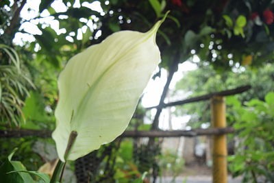

Sobre los Anturios:

Descripción:
son plantas caducas, herbáceas o leñosas, erectas, rastreras o trepadoras, de hojas muy decorativas. Las hojas son de consistencia y grosor notables, ovales, en forma de corazón o punta de flecha, bastante grande, a veces divididas en lóbulos o incluso en forma de mano. La espata, que a menudo se confunde con la flor del anturio, constituye el elemento de mayor curiosidad: puede ser rojo, purpúreo, verde manzana, rosa intenso, casi anaranjado, blanco, negro y amarillo que es muy difícil de conseguir. Son plantas llamativas y su tamaño varía según su especie.
Un ramo de anturios fue representado por la artista colombiana Beatriz González en su obra de 1987 titulada "Señor presidente, qué honor estar con usted en este momento histórico", alegórica de la masacre del Palacio de Justicia de Colombia, perpetrada entre el 6 y el 7 de noviembre de 1985 en Bogotá. La obra es la segunda homónima de una producida en 1986, en la que González representó al entonces presidente Belisario Betancur (considerado responsable político de la masacre) sonriente y rodeado de miembros de su gabinete y oficiales militares, sentado a una mesa en la que descansaba un cadáver calcinado, en referencia al estado en el que fueron encontradas muchas de las víctimas de esa masacre. En el trabajo de 1987 el cadáver fue remplazado por un ramo de anturios rojos.